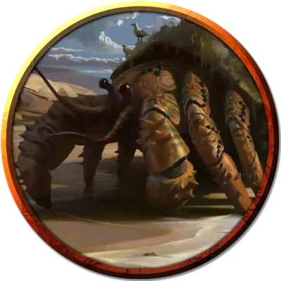

Калка-Килла
Kalka-kylla
Большой Зверь, нейтральный, именной НИП

Класс Доспеха 15 (природный доспех)
Хиты 85 (10к10 + 30)
Скорость 30 футов, плавая 30 футов
| мод | спас | ||
|---|---|---|---|
| СИЛ | 17 | +3 | +3 |
| ЛОВ | 12 | +1 | +1 |
| ТЕЛ | 16 | +3 | +3 |
| мод | спас | ||
|---|---|---|---|
| ИНТ | 15 | +2 | +2 |
| МДР | 16 | +3 | +3 |
| ХАР | 12 | +1 | +1 |
Навыки Обман +3, Проницательность +5, Скрытность +3
Чувства слепое зрение 30 футов, пассивное Восприятие 13
Языки Олманский
Опасность 3 (700 опыта)
Бонус мастерства +2
Особенности
Амфибия. Калка-Килла может дышать и воздухом, и под водой.
Обманчивая внешность. Пока Калка-Килла неподвижен и скрыт в своём панцире, он неотличим от гладкого валуна.
Раковина. Калка-Килла может бонусным действием втянуться внутрь или выползти из своего панциря. Находясь внутри раковины, Калка-Килла получает бонус +4 к КД, его скорость равна 0, и он не получает преимущества от бонусов к скорости.
Действия
Мультиатака. Калка-Килла совершает две атаки Клешнёй.
Клешня. . Рукопашная атака оружием: +5 к попаданию, досягаемость 5 фт, одна цель. Попадание: 10 (2к6 + 3) дробящего урона и если цель — Среднее существо или меньше, она становится схваченной (Сл высвобождения 13). У Калка-Киллы есть две клешни, каждая из которых может схватить одну цель.
Описание
Искатели приключений, которые попадут в подземные залы потаённого святилища Тамоачана, получат уникальную возможность — шанс пообщаться с ракообразным, умеющим говорить. Если Калка-Киллу удастся выманить из укрытия, но при этом избежать сражения, он может сообщить гостям немного потенциально полезной информации.